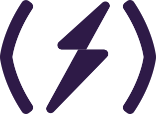

Parens white, bolt keeps the green→cyan gradient. Use as favicon, footer mark, social avatar.

Color contexts
On purple → white parens with gradient bolt. On cyan or green → all-purple mono mark (the gradient bolt would disappear on cyan). On white → purple parens with gradient bolt.